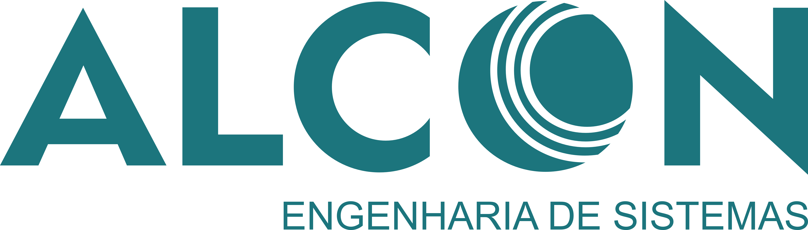

Curriculum Analysis
Analytics
Complete CV Analysis with AI..
Backend Engineer crafting clear, performant solutions for ambitious teams. I blend systems thinking, accessibility, and motion to ship useful, beautiful work.
Based in Lisbon, Portugal
Open to remote work
Backend Developer + Data Analysis + n8n Automation
Backend APIs, Data Analysis, Machine Learning, Automation with n8n
Open to new opportunities
Globally
Complete CV Analysis with AI..

Companion app for remote care.

Secure financial API for transactions, accounts, and banking integrations.
I build backend systems, APIs, data solutions, and automation workflows with n8n using Python, Node.js, databases, and cloud-ready technologies.
Companies I've worked with

Full Stack Developer (Freelance)
Self-Employed | 06/2023 - Present Remote • Deliver end-to-end web solutions, from responsive front-end interfaces to robust, integrated backend systems.
Network Analyst | Alcon Systems Engineering |
Performed fibre-optic splicing, optical power measurements, RF system configuration, signal propagation analysis, and security policy implementation across large-scale telecommunications projects.
2026
Backend / Digital Labirinto
2023/2026
FullStack Developer / Freelance
© 2026 Welbennys Kennedy Available for freelance & contracts

Backend Developer Software Engineering (3rd Year Student) with over 6 years of experience in network infrastructure and software development. Strong expertise in React.js, Next.js, TypeScript, Node.js, and Python (FastAPI/Django), focused on building scalable, high-performance web applications and APIs. Experienced in developing RESTful APIs, n8n automation workflows, and data-driven systems, integrating external services, and designing modular and maintainable architectures. Skilled in PostgreSQL, MySQL, and ORM tools, with solid knowledge of authentication (JWT, OAuth2) and backend systems.
Proficient in Docker, CI/CD pipelines, and cloud deployment workflows, following best practices in clean code, automated testing, and version control (Git). Brings a strong background in telecommunications and networking, including fiber optics, BGP, OSPF, SNMP, RF systems, and network security, enabling a unique ability to bridge software engineering and infrastructure. Results-driven professional with strong problem-solving, analytical thinking, and cross-functional collaboration skills, experienced in Agile environments (Scrum/Kanban) and focused on delivering efficient, scalable solutions.
Python APIs, n8n automation workflows, database systems, OCR applications, and scalable backend solutions.
Years
Projects
Clients
Deepening my knowledge of backend architecture, REST API development, database modeling, authentication, n8n automation, and scalable application optimization.
Tools, technologies & focus areas
© 2026 Welbennys Kennedy — Open to professional contracts & full-time roles